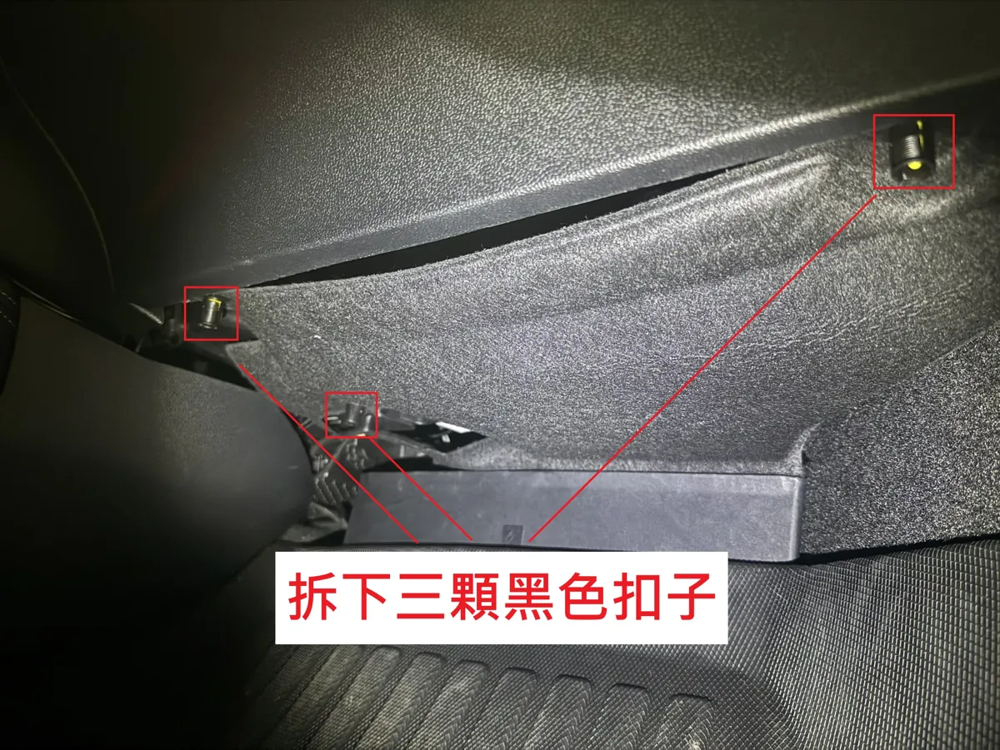
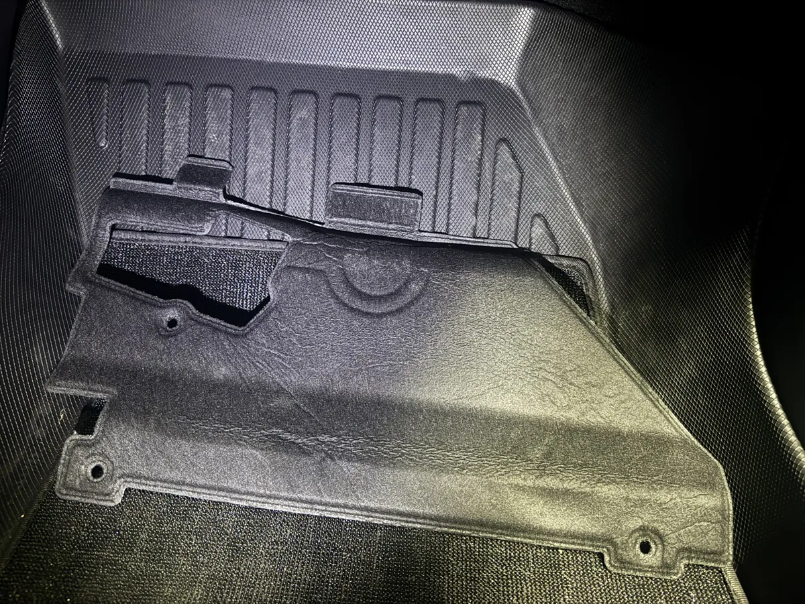
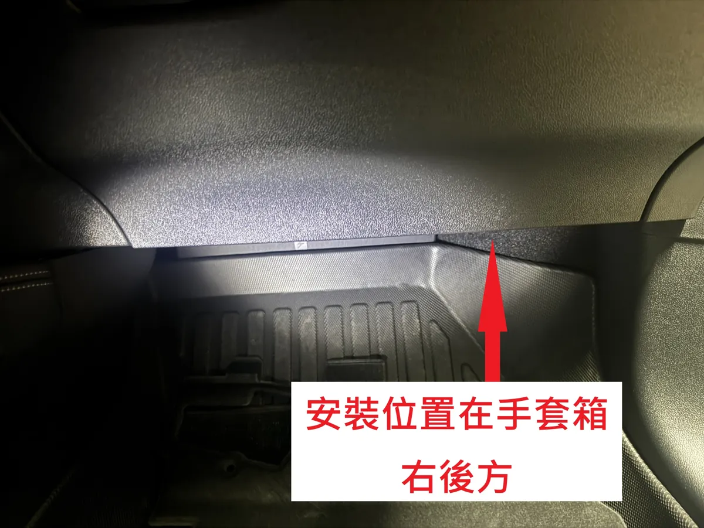
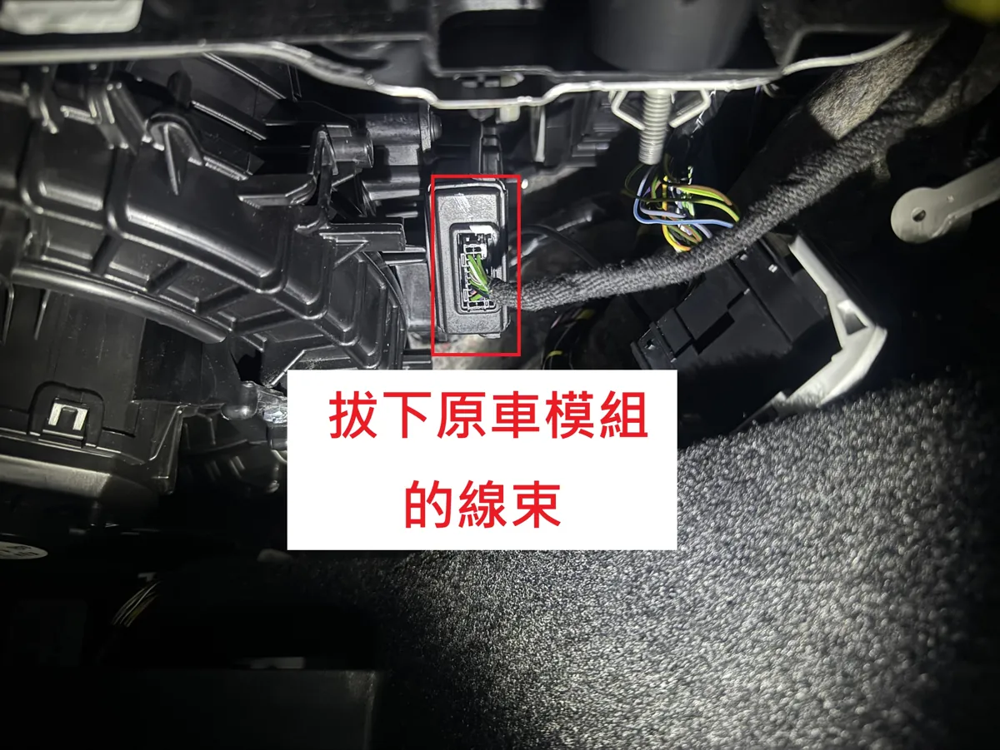
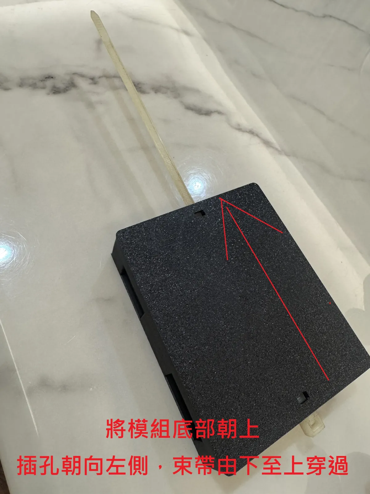
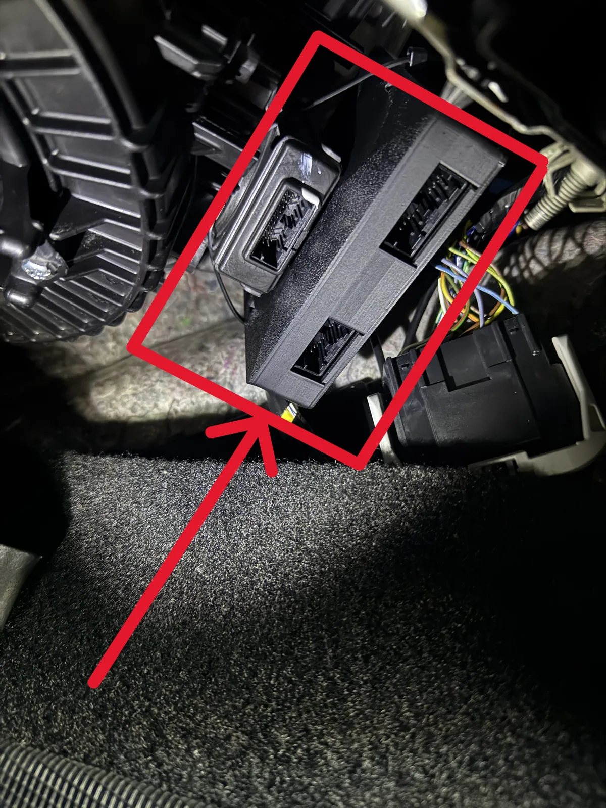
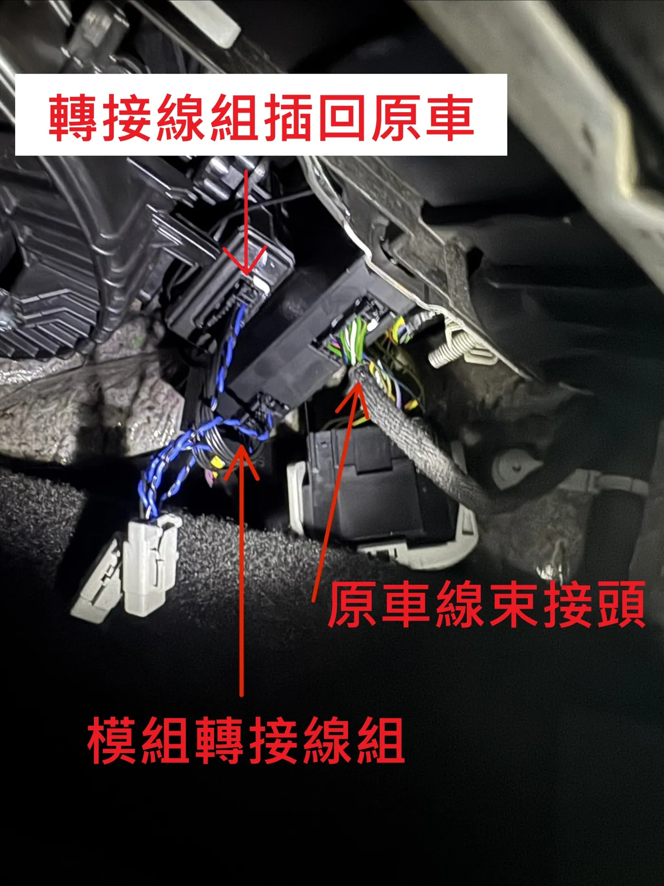

INSTALLATION GUIDE
JB MATRIX 自行安裝手冊
大燈優化模組 ・ Ford Focus MK4.5
安裝時間約 20 分鐘
剪線不需要
拆手套箱不需要
✅
安裝前請先完成保固登記。模組裝上後，QR Code 貼紙會在手套箱後方，不方便掃描。
看保固登記教學（約 1 分鐘）
看保固登記教學（約 1 分鐘）
⚠️
施工姿勢提醒
施工時需要側躺或趴在副駕駛腳踏墊上、仰頭往內操作，腰部和頸部負擔較大。請先評估自身的腰背狀況；若有腰傷或不適，建議交由授權店家安裝。
施工時需要側躺或趴在副駕駛腳踏墊上、仰頭往內操作，腰部和頸部負擔較大。請先評估自身的腰背狀況；若有腰傷或不適，建議交由授權店家安裝。
準備
安裝位置
副駕駛手套箱右後方、原車模組上方。全程原廠接頭對插，不剪線、不破壞原車線路。
準備工具
- JB MATRIX 模組＋轉接線組
- 束帶（穿過模組底殼的開孔）
- 手電筒（手套箱後方光線較暗）
施工前
- 已完成保固登記
- 車輛熄火後再開始拔插接頭
安裝步驟
-
拆下手套箱下方護板
取下紅框處 3 顆黑色塑膠扣子，往下拉出護板。

拆下紅框處 3 顆黑色扣子 
拆下的護板 -
找到安裝位置
從下方往內看手套箱右後方（箭頭處），就能看到原車模組。

-
拔下原車模組的線束
紅框處的接頭，壓住卡榫再拔，不要直接拉電線。

-
束帶穿過模組底殼開孔
將模組底部朝上、插孔朝向左側，束帶由下至上穿過底殼兩端的開孔。

-
固定模組
模組底面（貼有防異音泡棉的那面）緊靠在原車模組上方，用束帶束緊。方向不要裝反。

-
原車線束插入模組
把步驟 3 拔下的原車線束，插入模組靠外側的孔位，插到底、聽到「喀」一聲。
-
轉接線組小插頭插入模組
插入模組內側的小孔位，同樣插到底。
-
轉接線組另一頭插回原車模組
插回步驟 3 拔下線束的位置，完成接線。

完工接線圖（點圖可放大） -
安裝後檢查
發動車輛，依序做以下兩項檢查：
① 模組自檢（撥方向燈桿閃遠光燈，兩項都要通過）
閃 5 下「逼、逼」兩聲閃 6 下「逼、逼、逼」三聲任一項沒有聲音或聲數不對：確認每個接頭都插緊後再試一次；仍不通過請聯繫 LINE 客服。
-
裝回護板，完工
3 顆黑色扣子扣回即完成。
注意事項
- 每個接頭都要插到底、卡榫扣上，沒插好可能造成大燈功能異常。
- 請勿剪線、拆模組外殼或撕除貼紙，否則無法享有保固。
- 回原廠檢修前，模組不用拆下：拔下轉接線組，把原車線束插回原車模組，即恢復原廠狀態。
常見問題
自檢沒有聲音或聲數不對？
熄火後重新插緊每個接頭再試；仍不通過請聯繫 LINE 客服。
智慧遠光沒有作用？
確認燈光旋鈕在 AUTO、車速約 40 km/h 以上、周圍夠暗。完整檢查步驟見官網常見問題。
裝到一半不想自己裝？
可在 LINE 選單點「安裝據點」查詢授權店家。